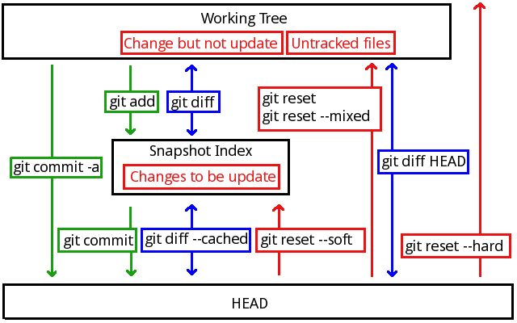

git config --global user.name "Jade Shan" git config --global user.email aaa@bbb.com
先要申请账号，建立自己的repo。
然后上传自己的ssh-key作为连接凭证。上传后检查是否能成功连接：
ssh -T git@github.com
如果失败，用debug方式检查一下是不是因为防火墙的原因：
ssh -vT git@github.com
还有一个失败的可能性是因为没有把私钥加上：
ssh-add ~/.ssh/id_rsa
验证可能成功连接后，把repo复制下来：
git clone git@github.com:Jade-Shan/Jade-Wubi.git
复制下来的第一次提交声明提交到来源：
git push origin master
以后的直接push就可以了：
git push
mkdir study cd study git init touch README git add README git commit -m 'first commit' git remote add origin git@github.com:Jade-Shan/study.git git push -u origin master
cd existing_git_repo git remote add origin git@github.com:Jade-Shan/study.git git pull -u origin master
cd workspace/wubi git init # 初始化 git add . # 目建立快照的索引 git commit # 提交修改
初始化一个新的工程，会建立.git目录保存信息。add为当前项目建立快照（snapshot）的索引（index file）。
提交时会在编辑器里要求输入备注。但是要注意第一行要少于50字，如果有第二行，一定要空白。
拷贝过来的工程目录中要带上.git目录，然后执行git init就会重新恢复版本库为可用状态了。
有很多文件是我们不想放到版本库中的，比如编辑过程中的临时文件或是程序构建中的临时文件。可以在项目根目录下的.gitignore文件中指定排除规则：
*.a # 忽略所有.a结尾的文件 !lib.a # 但不包括 lib.a /TODO # 仅忽略项目根目录下的 TODO 文件，不包括 subdir/TODO build/ # 忽略 build/ 目录下的所有文件 doc/*.txt # 忽略如 doc/aa.txt，但不包括 doc/subdir/aa.txt
对于git来说，可以理解为有三个工作区：
查看当前文件（work tree）和索引（index file）的区别：
git diff
在提交这前，先把改动添加到index file：
git add readme.txt
查看index file和版本库之间的差别：
git diff --cached
查看文件和版本库之间的差别：
git diff HEAD
提交更新的内容到版本库：
git commit
可以省略比对和快照的过程，直接一次提交所有的变更。但仅提交现有的文件，新文件还是要git add：
git commit -a
在检查修改内容的过程中，还可以查看当前工作的状态：
git status
如果要删除一个文件，要先用git rm命令。如果只在文件系统上删除而没有git rm的话，只会让这个文件的状态回到Change but not update状态。
soft表示回退到index，HEAD^指定上一个版本：
git reset --soft
默认的位置是mixed，回到工作版本：
git reset --mixed git reset
hard会把所有位置中的版本都回退掉：
git reset --hard
-- 文件名从版本库中去除文件：
git reset -- src/aa.c

显示所有的分支：
git branch
查看当前所在的分支及提交记录：
git-show-branch
想要建一个新的叫experimenal的分支：
git branch experienal
在切换分支之前要保证当前分支处于commit状态。
切换到experimenal分支：
git checkout experimenal
使用checkout可以在多个分支上随意切换。在一个分支上的操作不会影响到另一个分支。
可以把分支的创建与切换合并为一步：
git checkout -b experimenal
两个分支必须都已经commit才能合并。
要把experimenal合并到master，要先切到master：
git checkout master
然后把experimenal合并过来：
git merge experimenal
如果有冲突，会把冲突中的文件修改为diff格式的状态。要手动修正了以后再提交：
git commit -a
可以通过图型界面查看分支过程：
gitk
合并成功了以后可以删除原来的experimenal：
git branch -d experimenal
如果分支还没有合并，可以用大写-D表示强制删除，通常在分支失败时用：
git branch -D experimenal
假设现在有另一个人（用户B）和我合作。他的工作目录在：
mkdir wubi2
用户B从我的版本库中导出。
在没有服务器的情况下：
git clone wubi wubi2
通过服务器：
git clone git://git.jade.com/wubi wubi2
然后别人可以在我的代码基础上进行开发，然后提交：
git commit -a
用户B提交的内容只有自己能看到，他想让别人得到他的工作成果的话，就要把他提交的内容发布给其他开发者。
如果服务器允许直接发布，那可以直接发布到服务器：
git push
有些项目（如：linux kernel）不允许提交到版本库，只能做成补丁文件发邮件给别人：
git format-patch origin
回到我这边，我知道别人已经提交了，现在要取得别人的工作成果。如果不放心别人的工作，根据别人的远程仓库名为master的分支在本地建立一个名为otherone的分支。
在没有服务器的情况下：
cd wubi git fetch ../wubi2 master:otherone
有服务器的情况下（区别就是源地址，以后不再说明没有服务器的情况了）：
cd wubi git fetch git://git.jade.com/wubi master:otherone
比较一下别人改了哪些地方
git whatchanged -p master..otherone
如果认为对方改错了，可以删除掉对方的修改
git branch -D otherone
如果觉得没有问题了可以用pull命令导入别人的修改。其实pull命令相当于是fetch命令和merge命令的一个组合。当然如果信任对方的话，也可以不建立分支检查（略过上面的所有步骤）直接导入。
从目录：
git pull ../wubi2 master
从服务器：
git pull git://git.jade.com/wubi master
从服务器也可以不加参数，直接：
git pull
其实，用“git pull .”就相当于“git merge”。
用户B继续开发时先要取得我的工作成果，可以直接pull不用加参数。因为clone的时候已经记住了来源：
git pull
合作开发与合并分支都有可能发生冲突，看到如下错误信息：
Automatic merge failed; fix conflicts and then commit the result.
这个时候要手动排除冲突，源代码被会git修改。以“====”分隔冲突的两边。修改完成了以后可以再次提交：
git commit -a
查看提交的记录，每一次提交都有一个唯一的主键叫commit：
git log
加上参数-p可以显示详细日志信息，如提交的改动：
git log -p
可以通过commit的值查看当次提交的详细信息：
git show 1e193e9a7bf1699392c6bbe3d53d786b93e6570b
上面那个好长一串啊！其实只要前几个就行了（长到正好可以区分开来）：
git show 1e193e9
也可以指定查看分支的名字：
git show master git show experimenal
查看本次提交的头信息。每一次commit都会有parent commit,可以使用^表示parent:
git show HEAD^ # 查看 HEAD 的父版本的信息 git show HEAD^^ # 查看 HEAD 的父的父母的信息 git show HEAD~4 # 查看 HEAD 上溯 4 代的信息
要注意的是 git-merge 是会产生双父版本的,这种情况这样处理:
git show HEAD^1 # 查看 HEAD 的第一个父代 git show HEAD^2 # 查看 HEAD 的第二个父代
可以用一个名字代替序列号（就是常说的“打TAG”啦～）：
git tag V1.0 c9d52de78c132f6ea420644c2b7e422b225d258f git show V1.0 git branch stalbe V1.0 # 建立一个叫stalbe的分支
查找文本：
git grep "ibus" # 在所有版本口查找 git grep "ibus" V1.0 # 在V3版本中查找
定位具体的历史记录。显示 V3 之后直至 V7 的所有历史记录：
git log V3..V7
显示所有 V3 之后的历史记录。
git log V3..
注意<since>..<until>中任何一个被省略都将被默认设置为 HEAD。所以如果使用..<until>的话,git log 在大部分情况下会输出空的。
显示 2 周前到现在的所有历史记录。具体语法可查询git-ref-parse 命令的帮助文件。
git log –since=”2 weeks ago”
将显示在 experimental分支，但不在stable分支的历史记录：
git log stable..experimental
将显示在stable分支但不在experimental分支的历史记录：
git log experimental..stable
将显示在experimental分支但不在stable分支的历史记录：
git log stable ..experimental
gitk也可以定位具体的历史记录。将在GUI中显示自2周前到现在为止的，且位于drivers目录下的分支记录信息：
gitk –since=”2 weeks ago” drivers/